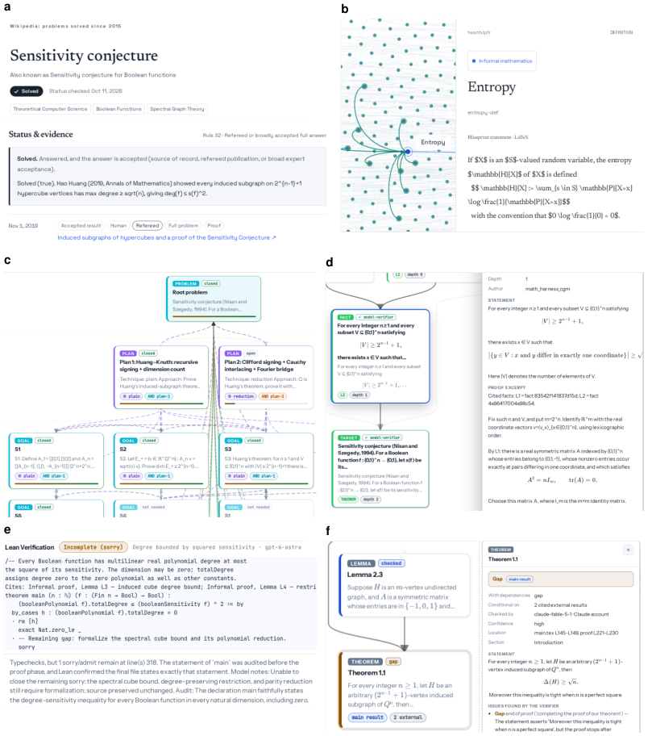
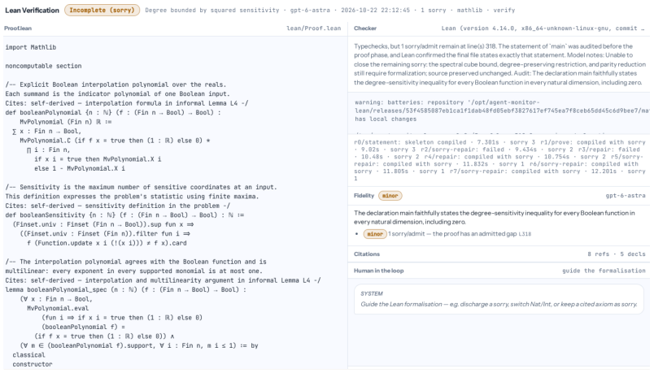
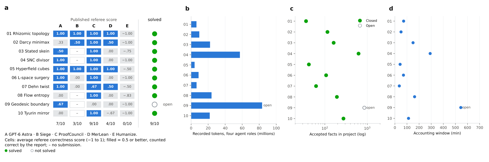

The Ansätze platform integrates a fixed-interface Lean checker for proposed proofs, covering placeholders, allowed axioms and statement fidelity; five results have reported Lean formalizations.
Abstract
Mathematical discovery requires preserving partial ideas and the evidence supporting their reuse. We present Ansatz, a research harness whose continual graph memory separates model-accepted claims and dependencies from curated exploration, and Ansatze, a community platform for inspecting, guiding and checking this work. On First Proof, Ansatz recorded nine local verifier closures in each of two ten-problem batches; a partial result in the Second Batch also counted as a pass under the study's criterion. These model-assessed outcomes include continued searches and differ from expert validation. Component studies and re-review expose disagreements and their dependency reach. Open-problem investigations produced candidate results, with five Lean formalizations reported. The platform connects problem discovery, research records, manuscript analysis and formal checking while preserving distinct evidence states. Together, these systems support cumulative human-AI research through persistent investigation and inspectable contributions.
Problem
AI-assisted mathematical research needs a persistent record of accepted claims, dependencies, failed approaches and intermediate findings. Without one, long investigations lose their state across sessions, and work shared with a community cannot be traced or challenged.
Approach
Ansatz is a multi-agent research harness: a main agent, parallel workers, a fresh model verifier and a curator. Its continual graph memory separates a fact graph of model-accepted claims and dependencies from a curated exploration graph with fourteen typed relations. Ansätze is a community platform built on it, covering problem discovery, manuscript analysis and Lean-based formal checking. It keeps evidence states separate: process state, model review, dependency closure, formal check, statement fidelity and provenance.

Figure 5: Platform views expose research state and checking outcomes. a , Catalogue entry for the sensitivity conjecture, showing its solved status and supporting source. b , Atlas view centred on entropy, linking a graph entry to its definition. c , Explore graph with plans, goals and their recorded states for a sensitivity-conjecture investigation. d , Facts graph and a selected record, with its
Results
On First Proof, Ansatz recorded nine model-verifier closures in each of two ten-problem batches. In the Second Batch, a partial Bernoulli result also counted as a pass, giving ten passes versus seven for Danus. Open-problem investigations produced candidate results, including the Jamison caterpillar conjecture and several Erdős problems. Lean formalizations were reported for five of these results; the rest remain AI-proposed and model-assessed.

Figure 3: Lean verification of the sensitivity run. The recorded state ( incomplete , one placeholder), the start of the formalization (the interpolation polynomial and the sensitivity, with their provenance comments), the checker summary stating that the audited statement of main was preserved, the eight checking rounds and the fidelity audit. The Lean warning about local changes in a dependency

Figure 4: Evaluation of the harness on First Proof Third Batch. a , Published referee correctness scores for five external systems (A, GPT-6 Astra; B, Siege, a Claude Opus 5.5 workflow; C, ProofCouncil; D, MerLean; E, Humanize, open-weight). Each cell is the average referee score on the report’s scale from -1 to 1 ; filled squares score 0.5 or better, the report’s threshold for a correct submissio
System
Passes (of 10)
Plain
4
Codex
6
Danus
7
Ansatz
10 (9 full + 1 partial)
First Proof Second Batch passes under the study's grading criterion